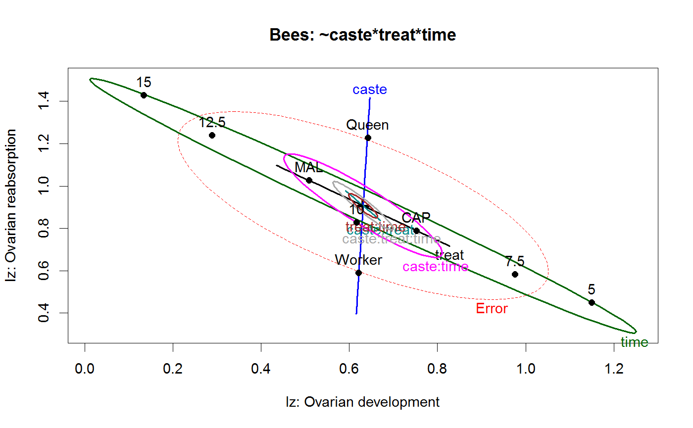
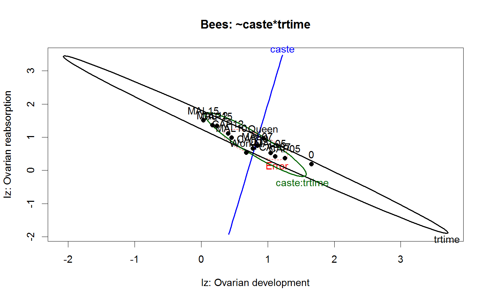
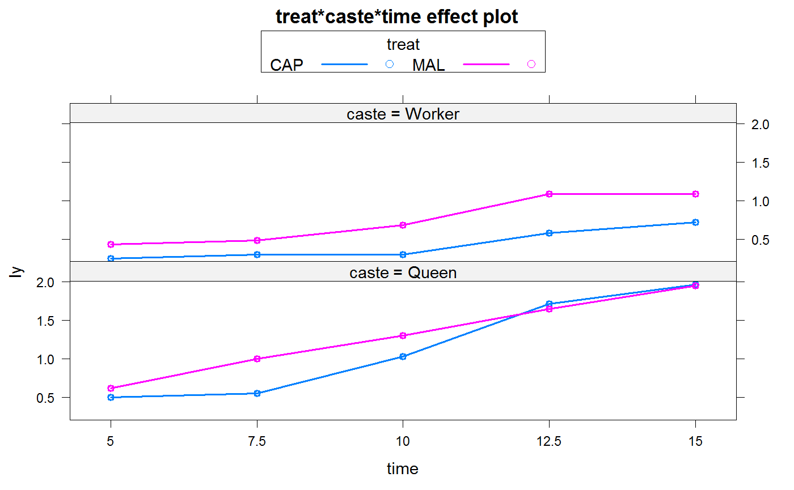
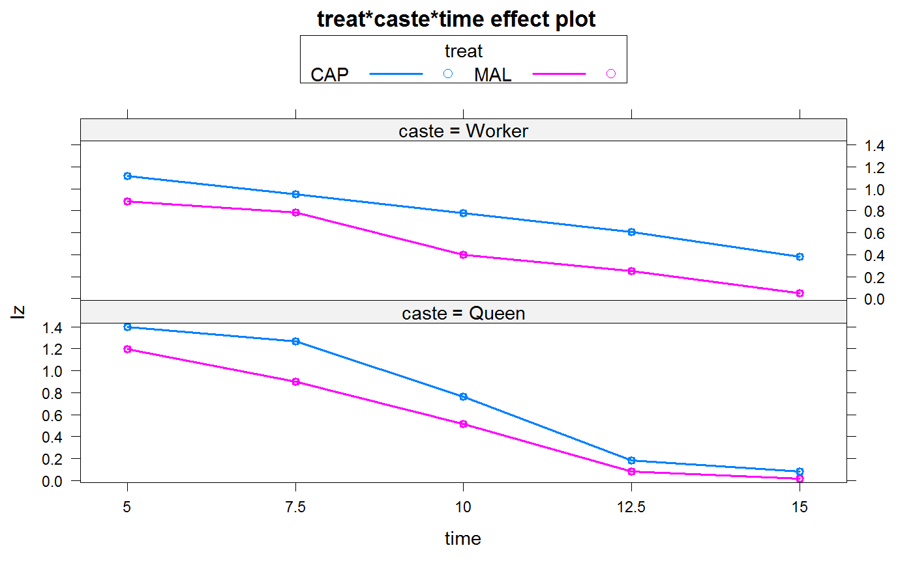

<!-- Generated by pkgdown: do not edit by hand -->
<!DOCTYPE html>
<html>
  <head>
  <meta charset="utf-8">
<meta http-equiv="X-UA-Compatible" content="IE=edge">
<meta name="viewport" content="width=device-width, initial-scale=1.0">

<title>Captive and maltreated bees — Bees • heplots</title>

<!-- jquery -->
<script src="https://code.jquery.com/jquery-3.1.0.min.js" integrity="sha384-nrOSfDHtoPMzJHjVTdCopGqIqeYETSXhZDFyniQ8ZHcVy08QesyHcnOUpMpqnmWq" crossorigin="anonymous"></script>
<!-- Bootstrap -->
<link href="https://maxcdn.bootstrapcdn.com/bootswatch/3.3.7/cerulean/bootstrap.min.css" rel="stylesheet" crossorigin="anonymous">

<script src="https://maxcdn.bootstrapcdn.com/bootstrap/3.3.7/js/bootstrap.min.js" integrity="sha384-Tc5IQib027qvyjSMfHjOMaLkfuWVxZxUPnCJA7l2mCWNIpG9mGCD8wGNIcPD7Txa" crossorigin="anonymous"></script>

<!-- Font Awesome icons -->
<link href="https://maxcdn.bootstrapcdn.com/font-awesome/4.6.3/css/font-awesome.min.css" rel="stylesheet" integrity="sha384-T8Gy5hrqNKT+hzMclPo118YTQO6cYprQmhrYwIiQ/3axmI1hQomh7Ud2hPOy8SP1" crossorigin="anonymous">


<!-- pkgdown -->
<link href="../pkgdown.css" rel="stylesheet">
<script src="../jquery.sticky-kit.min.js"></script>
<script src="../pkgdown.js"></script>
  
  
<!-- mathjax -->
<script src='https://mathjax.rstudio.com/latest/MathJax.js?config=TeX-AMS-MML_HTMLorMML'></script>

<!--[if lt IE 9]>
<script src="https://oss.maxcdn.com/html5shiv/3.7.3/html5shiv.min.js"></script>
<script src="https://oss.maxcdn.com/respond/1.4.2/respond.min.js"></script>
<![endif]-->


  </head>

  <body>
    <div class="container template-reference-topic">
      <header>
      <div class="navbar navbar-default navbar-fixed-top" role="navigation">
  <div class="container">
    <div class="navbar-header">
      <button type="button" class="navbar-toggle collapsed" data-toggle="collapse" data-target="#navbar">
        <span class="icon-bar"></span>
        <span class="icon-bar"></span>
        <span class="icon-bar"></span>
      </button>
      <a class="navbar-brand" href="../index.html">heplots</a>
    </div>
    <div id="navbar" class="navbar-collapse collapse">
      <ul class="nav navbar-nav">
        <li>
  <a href="../index.html">
    <span class="fa fa-home fa-lg"></span>
     
  </a>
</li>
<li>
  <a href="../reference/index.html">Reference</a>
</li>
      </ul>
      
      <ul class="nav navbar-nav navbar-right">
        
      </ul>
    </div><!--/.nav-collapse -->
  </div><!--/.container -->
</div><!--/.navbar -->

      
      </header>

      <div class="row">
  <div class="col-md-9 contents">
    <div class="page-header">
    <h1>Captive and maltreated bees</h1>
    </div>

    
    <p>Pabalan, Davey and Packe (2000) 
studied the effects of captivity and maltreatment
on reproductive capabilities of queen and worker bees in a complex factorial design.</p>
<p>Bees were placed in a small tube and either held captive (CAP) or shaken periodically (MAL) for
one of 5, 7.5, 10, 12.5 or 15 minutes, after which they were sacrificed and
two measures: ovarian development (<code>Iz</code>) and ovarian reabsorption (<code>Iy</code>), were taken.
A single control group was measured with no such treatment, i.e., at time 0; there are 
n=10 per group.</p>
<p>The design is thus nearly a three-way factorial, with factors
<code>caste</code> (Queen, Worker), <code>treat</code> (CAP, MAL) and <code>time</code>, 
except that there are only 11 combinations of Treatment and Time; 
we call these <code>trtime</code> below.</p>
    

    <pre class="usage"><span class='fu'>data</span>(<span class='no'>Bees</span>)</pre>
        
    <h2 class="hasAnchor" id="format"><a class="anchor" href="#format"></a>Format</h2>

    <p>A data frame with 246 observations on the following 6 variables.</p><dl class='dl-horizontal'>
    <dt><code>caste</code></dt><dd><p>a factor with levels <code>Queen</code> <code>Worker</code></p></dd>
    <dt><code>treat</code></dt><dd><p>a factor with levels <code>""</code> <code>CAP</code> <code>MAL</code></p></dd>
    <dt><code>time</code></dt><dd><p>an ordered factor: time of treatment</p></dd>
    <dt><code>Iz</code></dt><dd><p>an index of ovarian development</p></dd>
    <dt><code>Iy</code></dt><dd><p>an index of ovarian reabsorption</p></dd>
    <dt><code>trtime</code></dt><dd><p>a factor with levels <code>0</code> <code>CAP05</code> <code>CAP07</code> <code>CAP10</code> <code>CAP12</code> <code>CAP15</code> <code>MAL05</code> <code>MAL07</code> <code>MAL10</code> <code>MAL12</code> <code>MAL15</code></p></dd>
  </dl>
    
    <h2 class="hasAnchor" id="details"><a class="anchor" href="#details"></a>Details</h2>

    <p>Models for the three-way factorial design, using the formula <code>cbind(Iz,Iy) ~ caste*treat*time</code>
  ignore the control condition at <code>time==0</code>, where <code>treat==NA</code>.</p>   
<p>To handle the additional control group at <code>time==0</code>, while separating the
  effects of Treatment and Time, 10 contrasts can be defined for the <code>trtime</code>
  factor in the model <code>cbind(Iz,Iy) ~ caste*trtime</code>
  See <code>demo(bees.contrasts)</code> for details.</p>  
<p>In the <code>heplot</code> examples below, the default <code>size="evidence"</code> displays are
  too crowded to interpret, because some effects are so highly significant.  The alternative
  effect-size scaling, <code>size="effect"</code>, makes the relations clearer.</p>
    
    <h2 class="hasAnchor" id="source"><a class="anchor" href="#source"></a>Source</h2>

    <p>Pabalan, N., Davey, K. G. &amp; Packe, L. (2000).
Escalation of Aggressive Interactions During Staged Encounters in Halictus ligatus Say (Hymenoptera: Halictidae), with a Comparison of Circle Tube Behaviors with Other Halictine Species 
<em>Journal of Insect Behavior</em>,  
<b>13</b>, 627-650.</p>
    
    <h2 class="hasAnchor" id="references"><a class="anchor" href="#references"></a>References</h2>

    <p>Friendly, M. (2006).
Data Ellipses, HE Plots and Reduced-Rank Displays for Multivariate Linear Models: 
SAS Software and Examples 
<em>Journal of Statistical Software</em>, 
<b>17</b>, 1-42.</p>
    

    <h2 class="hasAnchor" id="examples"><a class="anchor" href="#examples"></a>Examples</h2>
    <pre class="examples"><div class='input'><span class='fu'>data</span>(<span class='no'>Bees</span>)
<span class='fu'>require</span>(<span class='no'>car</span>)

<span class='co'># 3-way factorial, ignoring 0 group</span>
<span class='no'>bees.mod</span> <span class='kw'>&lt;-</span> <span class='fu'>lm</span>(<span class='fu'>cbind</span>(<span class='no'>Iz</span>,<span class='no'>Iy</span>) ~ <span class='no'>caste</span>*<span class='no'>treat</span>*<span class='no'>time</span>, <span class='kw'>data</span><span class='kw'>=</span><span class='no'>Bees</span>)
<span class='fu'><a href='http://www.rdocumentation.org/packages/car/topics/Anova'>Anova</a></span>(<span class='no'>bees.mod</span>)</div><div class='output co'>#&gt; 
#&gt; Type II MANOVA Tests: Pillai test statistic
#&gt;                  Df test stat approx F num Df den Df    Pr(&gt;F)    
#&gt; caste             1   0.72792  240.787      2    180 &lt; 2.2e-16 ***
#&gt; treat             1   0.19313   21.542      2    180 4.098e-09 ***
#&gt; time              4   0.75684   27.548      8    362 &lt; 2.2e-16 ***
#&gt; caste:treat       1   0.02506    2.313      2    180    0.1019    
#&gt; caste:time        4   0.28670    7.572      8    362 2.288e-09 ***
#&gt; treat:time        4   0.01941    0.443      8    362    0.8945    
#&gt; caste:treat:time  4   0.06796    1.592      8    362    0.1257    
#&gt; ---
#&gt; Signif. codes:  0 <U+0091>***<U+0092> 0.001 <U+0091>**<U+0092> 0.01 <U+0091>*<U+0092> 0.05 <U+0091>.<U+0092> 0.1 <U+0091> <U+0092> 1</div><div class='input'>
<span class='no'>op</span><span class='kw'>&lt;-</span><span class='fu'>palette</span>(<span class='fu'>c</span>(<span class='fu'>palette</span>()[<span class='fl'>1</span>:<span class='fl'>4</span>],<span class='st'>"brown"</span>,<span class='st'>"magenta"</span>, <span class='st'>"olivedrab"</span>,<span class='st'>"darkgray"</span>))
<span class='fu'><a href='heplot.html'>heplot</a></span>(<span class='no'>bees.mod</span>, <span class='kw'>xlab</span><span class='kw'>=</span><span class='st'>"Iz: Ovarian development"</span>, <span class='kw'>ylab</span><span class='kw'>=</span><span class='st'>"Iz: Ovarian reabsorption"</span>,
                <span class='kw'>main</span><span class='kw'>=</span><span class='st'>"Bees: ~caste*treat*time"</span>)</div><div class='img'></div><div class='input'><span class='fu'><a href='heplot.html'>heplot</a></span>(<span class='no'>bees.mod</span>, <span class='kw'>xlab</span><span class='kw'>=</span><span class='st'>"Iz: Ovarian development"</span>, <span class='kw'>ylab</span><span class='kw'>=</span><span class='st'>"Iz: Ovarian reabsorption"</span>,
       <span class='kw'>main</span><span class='kw'>=</span><span class='st'>"Bees: ~caste*treat*time"</span>, <span class='kw'>size</span><span class='kw'>=</span><span class='st'>"effect"</span>)</div><div class='img'></div><div class='input'>
<span class='co'># two-way design, using trtime</span>
<span class='no'>bees.mod1</span> <span class='kw'>&lt;-</span> <span class='fu'>lm</span>(<span class='fu'>cbind</span>(<span class='no'>Iz</span>,<span class='no'>Iy</span>) ~ <span class='no'>caste</span>*<span class='no'>trtime</span>, <span class='kw'>data</span><span class='kw'>=</span><span class='no'>Bees</span>)
<span class='fu'><a href='http://www.rdocumentation.org/packages/car/topics/Anova'>Anova</a></span>(<span class='no'>bees.mod1</span>)</div><div class='output co'>#&gt; 
#&gt; Type II MANOVA Tests: Pillai test statistic
#&gt;              Df test stat approx F num Df den Df    Pr(&gt;F)    
#&gt; caste         1   0.67976  236.673      2    223 &lt; 2.2e-16 ***
#&gt; trtime       10   0.82851   15.842     20    448 &lt; 2.2e-16 ***
#&gt; caste:trtime 10   0.32173    4.294     20    448 3.746e-09 ***
#&gt; ---
#&gt; Signif. codes:  0 <U+0091>***<U+0092> 0.001 <U+0091>**<U+0092> 0.01 <U+0091>*<U+0092> 0.05 <U+0091>.<U+0092> 0.1 <U+0091> <U+0092> 1</div><div class='input'>
<span class='fu'><a href='heplot.html'>heplot</a></span>(<span class='no'>bees.mod1</span>, <span class='kw'>xlab</span><span class='kw'>=</span><span class='st'>"Iz: Ovarian development"</span>, <span class='kw'>ylab</span><span class='kw'>=</span><span class='st'>"Iz: Ovarian reabsorption"</span>,
                <span class='kw'>main</span><span class='kw'>=</span><span class='st'>"Bees: ~caste*trtime"</span>)</div><div class='img'></div><div class='input'><span class='fu'><a href='heplot.html'>heplot</a></span>(<span class='no'>bees.mod1</span>, <span class='kw'>xlab</span><span class='kw'>=</span><span class='st'>"Iz: Ovarian development"</span>, <span class='kw'>ylab</span><span class='kw'>=</span><span class='st'>"Iz: Ovarian reabsorption"</span>,
       <span class='kw'>main</span><span class='kw'>=</span><span class='st'>"Bees: ~caste*trtime"</span>,<span class='kw'>size</span><span class='kw'>=</span><span class='st'>"effect"</span>)</div><div class='img'></div><div class='input'><span class='fu'>palette</span>(<span class='no'>op</span>)

<span class='co'># effect plots for separate responses</span>
<span class='kw'>if</span>(<span class='fu'>require</span>(<span class='no'>effects</span>)) {
        <span class='no'>bees.lm1</span> <span class='kw'>&lt;-</span><span class='fu'>lm</span>(<span class='no'>Iy</span> ~ <span class='no'>treat</span>*<span class='no'>caste</span>*<span class='no'>time</span>, <span class='kw'>data</span><span class='kw'>=</span><span class='no'>Bees</span>)
        <span class='no'>bees.lm2</span> <span class='kw'>&lt;-</span><span class='fu'>lm</span>(<span class='no'>Iz</span> ~ <span class='no'>treat</span>*<span class='no'>caste</span>*<span class='no'>time</span>, <span class='kw'>data</span><span class='kw'>=</span><span class='no'>Bees</span>)

        <span class='no'>bees.eff1</span> <span class='kw'>&lt;-</span> <span class='fu'><a href='http://www.rdocumentation.org/packages/effects/topics/effect'>allEffects</a></span>(<span class='no'>bees.lm1</span>)
        <span class='fu'>plot</span>(<span class='no'>bees.eff1</span>,<span class='kw'>multiline</span><span class='kw'>=</span><span class='fl'>TRUE</span>,<span class='kw'>ask</span><span class='kw'>=</span><span class='fl'>FALSE</span>)

        <span class='no'>bees.eff2</span> <span class='kw'>&lt;-</span> <span class='fu'><a href='http://www.rdocumentation.org/packages/effects/topics/effect'>allEffects</a></span>(<span class='no'>bees.lm2</span>)
        <span class='fu'>plot</span>(<span class='no'>bees.eff2</span>,<span class='kw'>multiline</span><span class='kw'>=</span><span class='fl'>TRUE</span>,<span class='kw'>ask</span><span class='kw'>=</span><span class='fl'>FALSE</span>)
}</div><div class='img'></div><div class='img'></div><div class='input'>
</div></pre>
  </div>
  <div class="col-md-3 hidden-xs hidden-sm" id="sidebar">
    <h2>Contents</h2>
    <ul class="nav nav-pills nav-stacked">
      
      <li><a href="#format">Format</a></li>

      <li><a href="#details">Details</a></li>

      <li><a href="#source">Source</a></li>

      <li><a href="#references">References</a></li>
      
      <li><a href="#examples">Examples</a></li>
    </ul>

  </div>
</div>

      <footer>
      <div class="copyright">
  <p>Developed by John Fox, Michael Friendly.</p>
</div>

<div class="pkgdown">
  <p>Site built with <a href="http://hadley.github.io/pkgdown/">pkgdown</a>.</p>
</div>

      </footer>
   </div>

  </body>
</html>
